「第3回 Board Game Japanカップ」審査結果(2024年11月〜2025年1月に実施)
エントリー期間に、クリエイター部門81作品、ジュニアクリエイター部門12作品のご応募がありました。たくさんのご応募をいただき、ありがとうございました!
審査の結果、以下の作品が第3回Board Game Japanカップの入賞作品となりました。(各賞における作品の並び順は、応募時のエントリー順となります)
なお、3月8日（土）10:00～18:00にビジョンセンター横浜みなとみらいで開催される教育・研修ゲーム/サービスの展示・販売・商談・体験会「Play & Learn 2025(#03)」で、第3回Board Game Japanカップの表彰式を行う予定です。
受賞作品の試遊なども計画していますので、ご興味を持たれた方はぜひご参加ください。
イベントの詳細やお申し込み方法はPlay & Learn 2025(#03)の公式サイトをご覧ください。
クリエイター部門: 選評
入賞作品に関する選評は次の通りです。
大賞（賞品：Amazonギフトカード5万円分）
「スーパーバグ！」（栗田崇史さん、クボナオさん、村中絵美里さん、佐藤ルブナさん、栗田怜奈さん・東京都）
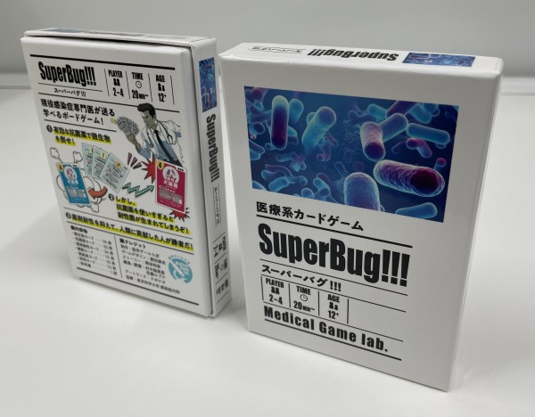
選評：ゲームとしてはシンプルですが、ルールが細やかでそれを理解することが感染症や抗菌薬の理解に繋がるところが評価されました。コロナ以後様々な感染症や微生物、それを抑える薬の効果や使い過ぎのリスクなどについて、ナーバスになっている人たちが理解を深める良いツールだと思います。
入賞（賞品：Amazonギフトカード1万円分）
「俺の最高の友達を紹介するぜ！」（前川姫菜さん、東宏海さん・福岡県）
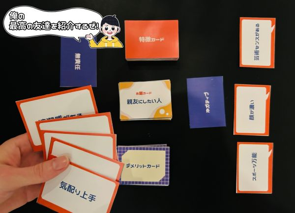
選評：コミュニケーション能力やプレゼン能力を楽しく遊びながら学べる点が評価されました。特に、デメリットカードを引いた際にどのようにその短所をフォローしていくのかがゲームのハイライトとなり、最高に盛り上がりそうです。
「しゃかしゃかみっけ」（あすかさん・東京都）
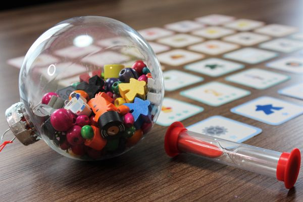
選評：直観的に遊べる点、「しゃかしゃか」と「みっけ」という語感、砂時計による視覚的な時間制限がとても魅力的です。まさに２歳から遊べるであろうシンプルかつインクルーシブなデザインが評価されました。
「ダストシュート」（Kato Rikuさん・長崎県）
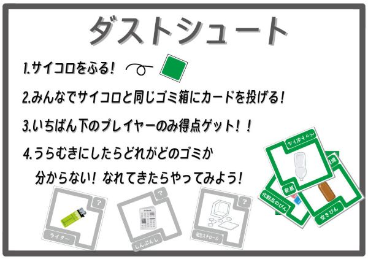
選評：ゴミの分別という身近なテーマを楽しくわかりやすく遊べるゲームです。ゴミ箱に投げるといった動作が加わるのも楽しそうです。ゴミの分別は地域特性もあるので、ローカルなアイテムを拡張したり、遊ぶ人の年齢や知識に応じて、いくつもの遊び方ができそうな点も評価されました。
「EIYO HERO（エイヨウヒーロー）」（関口いちろさん、寺内麻美さん・東京都）
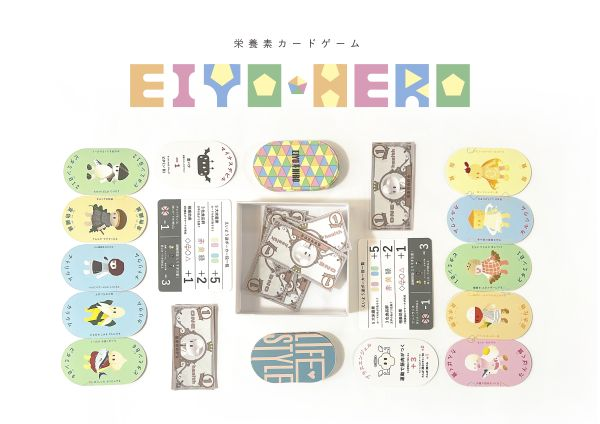
選評：キャラクターを一目見るだけで、何の栄養素で、何と仲良くなることが体に良いのかわかりやすく作られていることが評価されました。シンプルでゲーム性は高くないかもしれませんが、すぐ楽しく遊ぶことができ、分かりやすいキャラクターになじむことで理解が深まるきっかけになりそうです。
「決断の現場（仮称）」（大西光雄さん、三木大輔さん、若井聡智さん、大下修央さん・埼玉県）
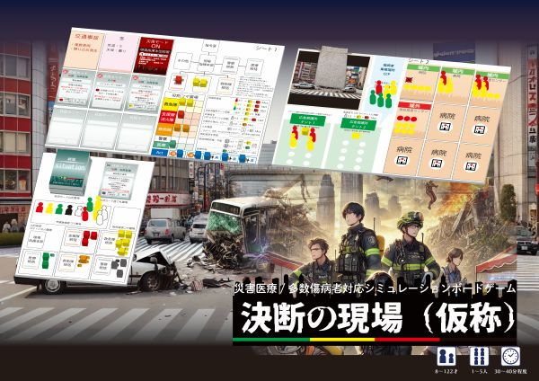
選評：災害現場での対応には常に決断が伴いますが、それをゲームで疑似体験することができる点が評価されました。特に専門家の方々が持つ知識や経験に基づいて作成されているため、よりリアリティのある状況や判断をすることができるようになっています。
審査員特別賞（賞品：Amazonギフトカード1万円分）
「回想かるた 記憶に挑戦」（田中孝史さん・兵庫県）
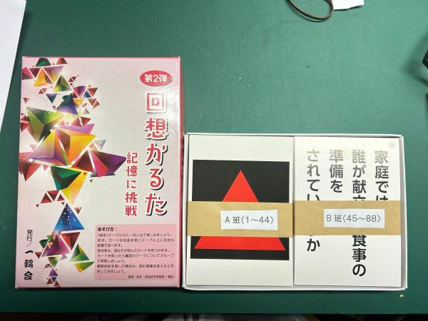
選評：コンテストの開始以来最高齢の方からの応募で、自分たちが抱える課題をゲームとして制作し活動されていることに、まず敬意を表したいと思います。認知症予防のために、お題に合わせ自分たちの思い出や記憶を呼び起こし、発表することで参加者間の交流を深めていくという点が評価されました。しかも高齢の開発者の方自身が主体となりワークショップを続けておられるところが素晴らしいです。
ジュニアクリエイター部門: 作品と選評
入賞作品に関する選評は次の通りです。
入賞（賞品：Amazonギフトカード1万円分）
「気温あげま戦隊 CO2サクゲンジャー」（物部さらさん・神奈川県）
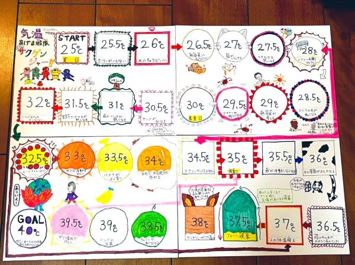
選評：すごろくなのにゴールをしてはいけないというゲームのコンセプトがユニークです。気候変動について調べた内容をうまくゲームにも落とし込めています。参加者でハラハラドキドキ、協力しながら温暖化対策について学ぶことができます。
「イロトイロ」（田島ちひろさん・東京都）
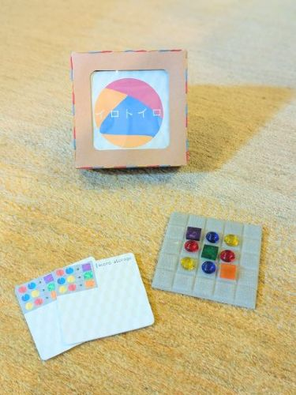
選評：色の三原色に着想を得て、色の組み合わせによって新たな色をつくりだしていく楽しさと戦略性が評価されました。よりシンプルなルールにして対象年齢を低く設定した作品や、光の三原色に注目した別デザインのスピンオフ作品なども期待されます。
「街一番の縫い物職人」（小山珠久さん・東京都）
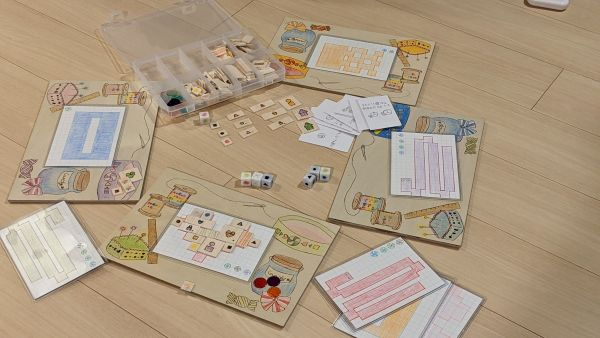
選評：お裁縫という身近なテーマを可愛らしいゲームに仕上げているところが良いと思います。ゲームとしてもある程度の完成度がありますが、サイコロの数が少し多いので初心者用には少なくしても良いかなと思いました。
「第2回 Board Game Japanカップ」審査結果(2023年11月〜2024年1月に実施)
エントリー期間に、クリエイター部門28作品、ジュニアクリエイター部門23作品のご応募がありました。たくさんのご応募をいただき、ありがとうございました!
審査の結果、以下の作品が第2回Board Game Japanカップの入賞作品となりました。(各賞における作品の並び順は、応募時のエントリー順となります)
なお、3月17日（日）10:00～17:30に新横浜3丁目大ホールで開催される教育・研修ゲーム/サービスの展示・販売・商談・体験会「Play & Learn 2024(#01)」で、第2回Board Game Japanカップの表彰式を行う予定です。
受賞作品の試遊なども計画していますので、ご興味を持たれた方はぜひご参加ください。
イベントの詳細やお申し込み方法はPlay & Learn 2024(#01)の公式サイトをご覧ください。
クリエイター部門: 選評
入賞作品に関する選評は次の通りです。
＊選評は審査員が分担して執筆していますので、作品によって文章量が異なりますが、ご容赦ください。
大賞（賞品：Amazonギフトカード5万円分）
「テントセン」（冨村大翔さん、進藤晴さん・愛知県）
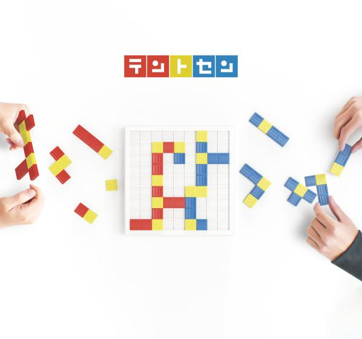
選評：点字ブロックは世の中に浸透しているがゆえに、社会課題となっていること自体、健常者にはなかなか意識が向きにくいと思います。そういったテーマを用い「点字ブロック」という存在の意義を喚起させる仕組みが上手く作りこまれています。また、視覚障害のある方も遊べそうな所も良くできています。
入賞（賞品：Amazonギフトカード1万円分）
「HOTDOG - Put the Sausage！-」（molliさん・埼玉県）
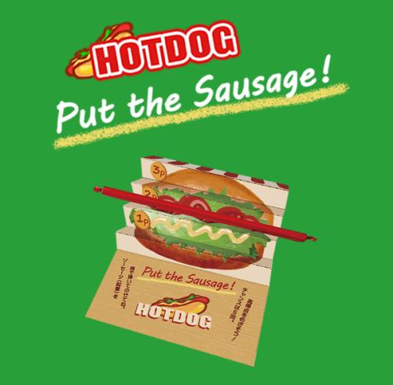
選評：超シンプルで面白く、完成度が高いコンテンツとしての良さに加え、郵送して友達に薦め拡散できるアウトリーチ性の高さが、他のゲームにはない良いアイデアとして評価のポイントになりました。
「DOCTOR EGG 〜生活習慣病患者を守れ〜」（GARROW JEANS 瀧翔太さん、鈴木陽登さん、山下雄生さん、佐野亮太朗さん・東京都）
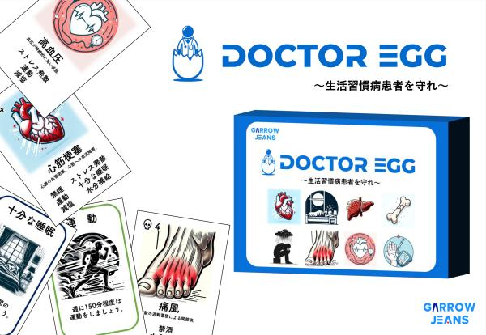
選評：日本での死亡者数の６割を占める生活習慣病をテーマに、プレーヤーが医者となり、各病気にあったアドバイスを送り治療するゲームになっています。「ストレス発散」といった複数種類の生活習慣病に効くアドバイスがあるなど、生活習慣病とその予防・対処への理解が深まる点が評価されました。
「摂食障害予防ゲーミング教材 『キュアード』（仮）」（竹田剛（神戸学院大学心理学部）さん、おちゃずけさん、大下修央（スピカデザイン）さん・兵庫県）
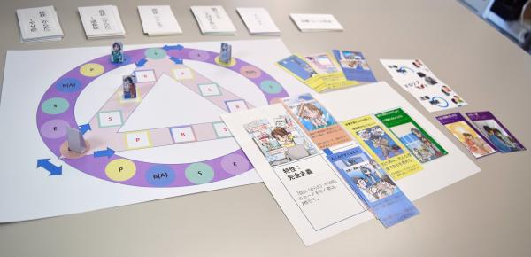
選評：中学生・高校生にはイメージしづらいことがある摂食障害を、ゲームを通して体験し「身近な自分事」として理解できるゲームとなっています。摂食障害の症状とその回復過程について学ぶための教材として授業等で用いることができる点が評価されました。
「ミライノクラシ」（石原滉士さん・東京都）
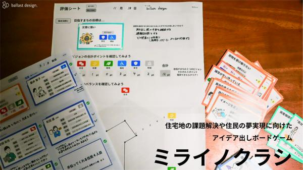
選評：住民になって街づくりに関する様々なアイディアを出してミッションをクリア、チームと個人の幸福度を獲得していくゲームです。評価シートなど、街づくりのワークショップ等で使うのにも役立ちそうなツールがいっぱい盛り込まれているほか、白紙のカードに自分自身のカードを作ることができることで、自分事として街づくりを考えることや、住民カードに外国人、介護をしている人、同性愛者やひとり親など支援が必要な人やマイノリティの人たちも含まれていることに気付かせる工夫が盛り込まれていました。また、予算が限られている中で、プレイヤーだけではなくチームとしての幸福度を考えていくという制約があることでバランスの良い議論をしやすくする作品です。
ジュニアクリエイター部門: 作品と選評
入賞作品に関する選評は次の通りです。
＊選評は審査員が分担して執筆していますので、作品によって文章量が異なりますが、ご容赦ください。
大賞（賞品：Amazonギフトカード3万円分）
「Hoi」（田島ちひろさん・東京都）
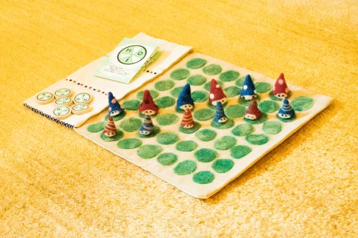
選評：ゲームとしての完成度も高く、長く大事に使ってもらいたいという思いから一つ一つ丁寧に手作りされていたり、紛失や修理などのアフターフォローまでしようとするエコフレンドリーな取り組みがとても良いと思います。
入賞（賞品：Amazonギフトカード1万円分）
「Burst of Mana（バースト・オブ・マナ）」（rukoさん・千葉県）
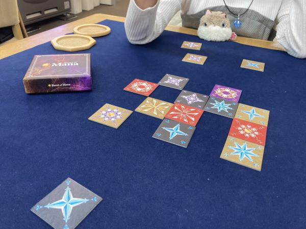
選評：変異し増殖したマナを扱いながら、相手のマナ噴出孔を塞ぐゲームです。つくりこまれたカードとシンプルなルールがつくりあげる良い意味で独特な世界観にひきこまれる点が評価されました。
「モコちゃん人生ゲーム」（さきさん・東京都）
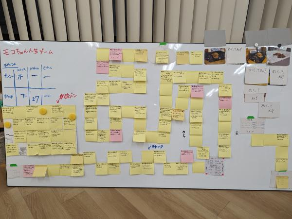
選評：愛犬のモコちゃんの思い出や写真も入れこんで作られた人（犬？）生ゲームです。身近なテーマを選んで、ほかの人と共有してもらうためのツールとして作られており、作成者のモコちゃんへの思いが伝わってくる素敵な作品でした。また、ゲームを作るために犬の病気や生涯についても調べるなど、自分自身の学びにもつながっていることがジュニアクリエイター部門としても重要な点でした。思い出や調べたことを付箋に書き、さらには写真もマスにするなど並び替えの自由度も高く、身近にある材料で作る人も遊ぶ人も楽しめるゲームが作れることを教えてくれる作品です。
「「核のゴミ」を知り、議論するためのボードゲーム」（磯貝月香さん、平原成美さん、村上寛朗さん、若菜晏さん・東京都）
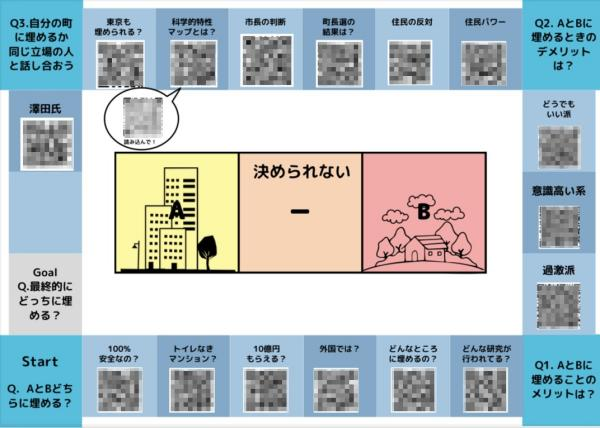
選評：核のゴミの地層処分について、様々な情報や視点をすごろくのマス目から学び、どちらの地域に核のゴミを埋めるかを議論するためのゲームです。マス目にQRコードがあり、それを読み取るという仕掛けがユニークでした。すごろくであるために、止まらないで進んでしまう目もあるかと思いますが、現実でも得られない情報や視点ということもあるかもしれず、振り返りのときに、止まらなかった目についての情報について議論が生まれるかもしれないことも狙っているのかな、とも思いました。作成者の皆さんが、同世代の中高生の人たちに考えてもらいたいという問題を共有するためにゲームというツールを使う工夫を色々とちりばめてくれた作品です。
「無敵のチータラ」（まるるさん・神奈川県）
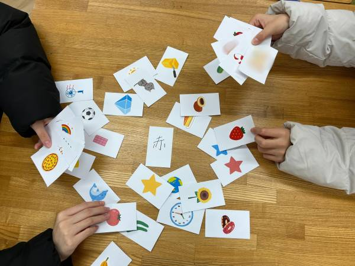
選評：感覚とひらめきで共通点を見つけるという反射神経ゲームです。「チータラ」という児童・生徒に身近なお菓子を中心に据え、「共通点を探す」という科学的思考が促されている点が評価されました。
「第1回 Board Game Japanカップ」審査結果(2023年1月〜3月に実施)
エントリー期間に、クリエイター部門42作品、ユーザー部門6作品のご応募がありました。たくさんのご応募をいただき、ありがとうございました!
審査の結果、以下の作品が第1回Board Game Japanカップの入賞作品となりました。(各賞における作品の並び順は、応募時のエントリー順となります)
クリエイター部門: 選評
入賞作品に関する選評は次の通りです。
大賞（賞品：Amazonギフトカード5万円分、副賞：ゲームマーケット2023春「研修ゲームラボ」ブース内出展権）
「歯の王様をまもるゲーム」（株式会社Dental Defense 生澤右子さん、スピカデザイン 大下修央さん・東京都、埼玉県）
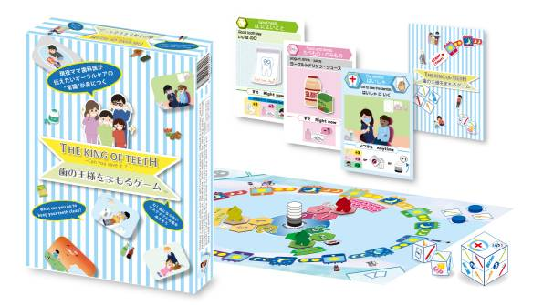
選評：子どもを持つ親が悩みがちなオーラルケアについて子ども自身が大人と一緒に体験できるようにゲーム化した点、専門家である歯科医の方が発案されておりエビデンスに基づいた内容である点、虫歯になってしまうプロセスを”カウントダウン"という形で表現しており視覚的な面白さも伴うゲームである点など、ユニークさ・学習要素・ゲーム性を兼ね備えており、大賞にふさわしい作品と評価されました。
審査員特別賞（賞品：Amazonギフトカード2万円分）
「ソノトキボクハ」（AvignonGamesさん・大阪府）
選評：同じものを見ても、まったく違うことを思う。他者との間でのミスコミュニケーションを解消するためのツールとして、「ソノトキボクハ」はシンプルながらにいろいろな遊び方が楽しめそうだと思った。例えば、自分自身が昔と今とで感じ方が異なっていることを伝えることもできる。あるいはこのゲームは7歳からとあるけれど、感情を言葉としてうまく伝えられないことで、もどかしくて泣いてしまう子供が、気持ちの整理をつけるためにも使えるのではないだろうか。そんないろんな使い方を思い起こさせるようなゲームである。ーー審査員 江間 有沙（東京大学未来ビジョン研究センター准教授）
「ツミキルン⁉︎」（渡邉かれんさん・佐賀県）
選評：陶芸をしたことがないのですが、リアルな焼き物をコマにしているところや、釜に詰めるところをテーマにしているところが斬新で面白い。ビジュアル的にもとても楽しそうで、やってみたくなりました。ーー審査員：加納 圭（滋賀大学教育学部教授）
「ペリー来航の7日間」（チーム家系さん・東京都）
選評：男性では「なんとなく」でしか分からない世界。まじまじと聞くのには恥ずかしさもあり、聞きづらいことをゲームを通じて追体験でき、上手く伝えられていると思う。その時女性ではどういったことが起こっているとか、人により症状が違うことや、アクシデントが起こった時の対応など、ゲーム後に女性やパートナーに対してのサポートの仕方を考える良い機会が持てるボードゲームである。高校生以上を対象としているが、対象はあえて男女で分けても良いと思った（女性は中学生以上、男性は高校生以上など）。より良い関係に気づいていく上で、ぜひ多くの男性に体験してほしいと思う。ーー審査員：堂野 能伸（NPO法人Board Game Japan代表理事）
入賞（賞品：Amazonギフトカード1万円分）
「LIFE」（フダコマ広場さん・東京都）
選評：防災という社会的に重要なテーマを扱い、老若男女が楽しめるゲームにしたことや、ゲームのコンセプトや仕組みを伝えるプレゼンテーション力の高さが評価されました。
「漢ポー」（石川家さん・山形県）
選評：お子さんが8歳の時にひらめいたアイデアをもとに家族でゲーム化されたということで、「ゲームの種になるアイデアは日々の生活の中に埋もれている」ことを感じさせるユニークな作品という点が評価されました。
「グラマ」（学生団体ビーラインドプロジェクトさん・東京都）
選評：視覚障害のある方とない方がともに遊び、相互理解を深めるためのゲームというインクルーシブな視点で開発されており、シンプルなルールですぐに遊べる協力ゲームであることが評価されました。
「ごみゼロゲーム」（坂野晶さん・兵庫県）
選評：環境問題をテーマにしたボードゲームは多くありますが、ごみ減量のキーワードとされる「4R」の中で”Refuse（リフューズ）”が最重要であるという明確なメッセージをゲームに反映している点が評価されました。
「ぎゅっと〜AIとともに生きる〜」（りんごラボさん・栃木県、埼玉県、神奈川県、東京都）
選評：AIと人間が共生する未来社会の姿をみんなで楽しみながら考える、というユニークなコンセプトを、近年国内で普及しつつある発想系カードゲームという形で具体化した点が評価されました。
ユーザー部門: 作品と選評
入賞作品と、作品に関する選評は次の通りです。
入賞（賞品：Amazonギフトカード1万円分）
ボードゲーム川柳（たかひろうさん・新潟県）
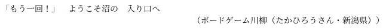
選評：著者の方いわく「ボードゲームのインストをやっていて、言われて一番嬉しい言葉。仲間の輪が広がった実感を感じる瞬間の川柳です」。多くのボードゲームファンにとって身に覚えがあるであろう場面を、共感しやすいシンプルな言葉にまとめたことが評価されました。
ボードゲーム作文（のぼりくだりさん・広島県）
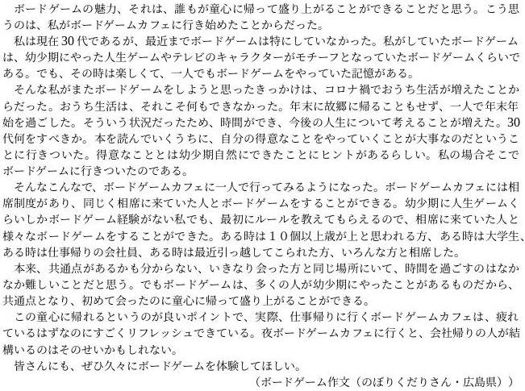
選評：著者の方は、コロナ禍で生活スタイルが変化する中でボードゲームに注目されたとのこと。臨場感のあるエピソードを通して、読んだ人にも「ボードゲームカフェに行ってみたいな」と思わせる作品であることが評価されました。